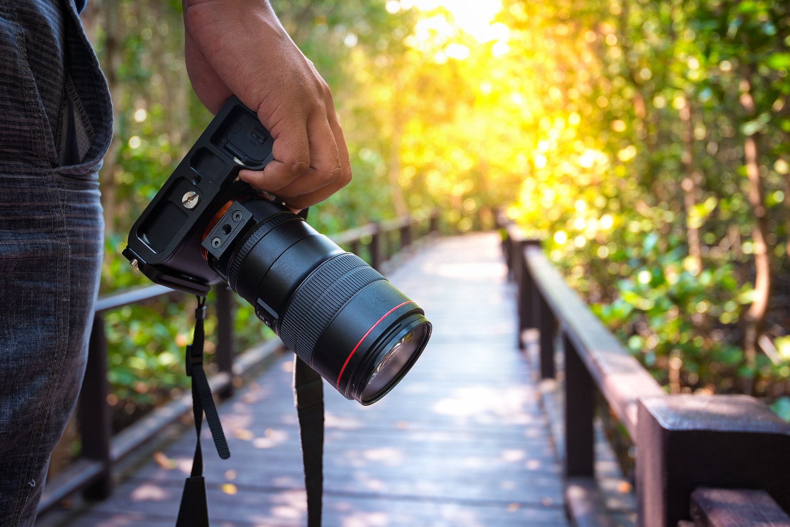
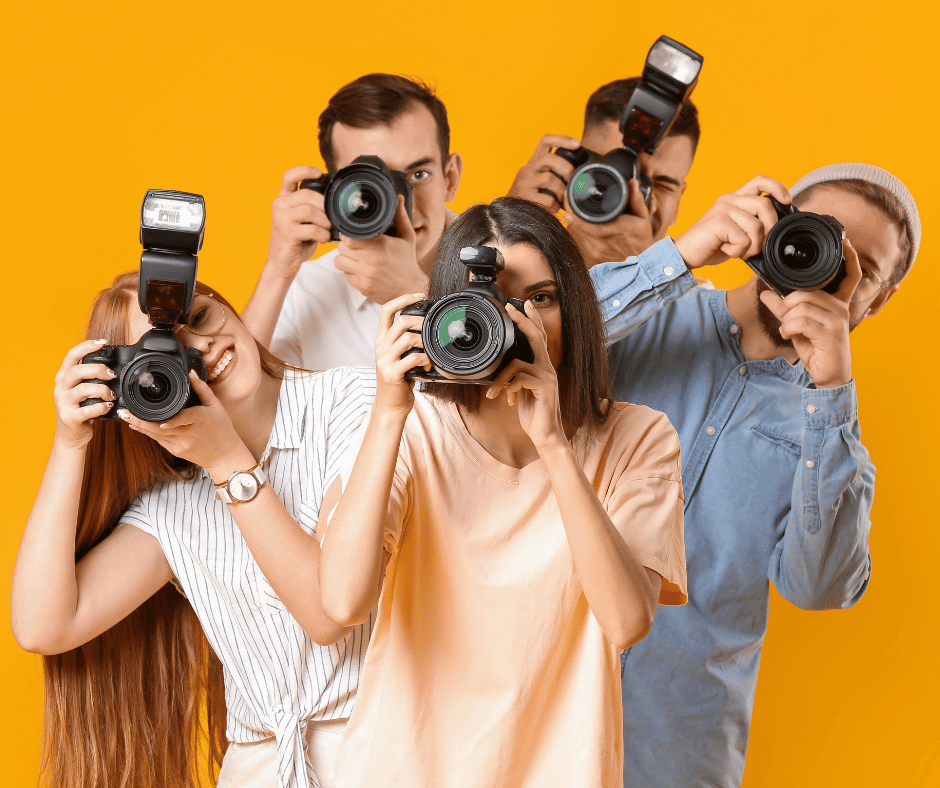
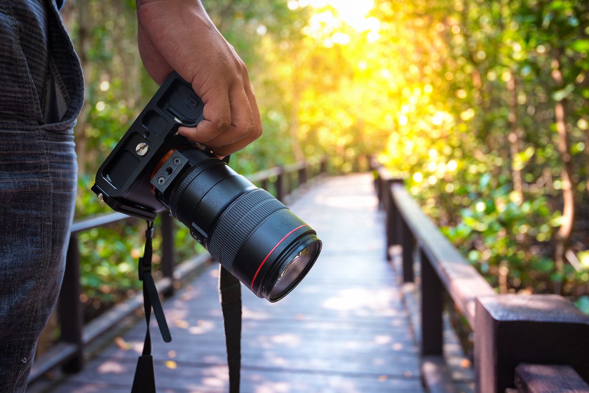
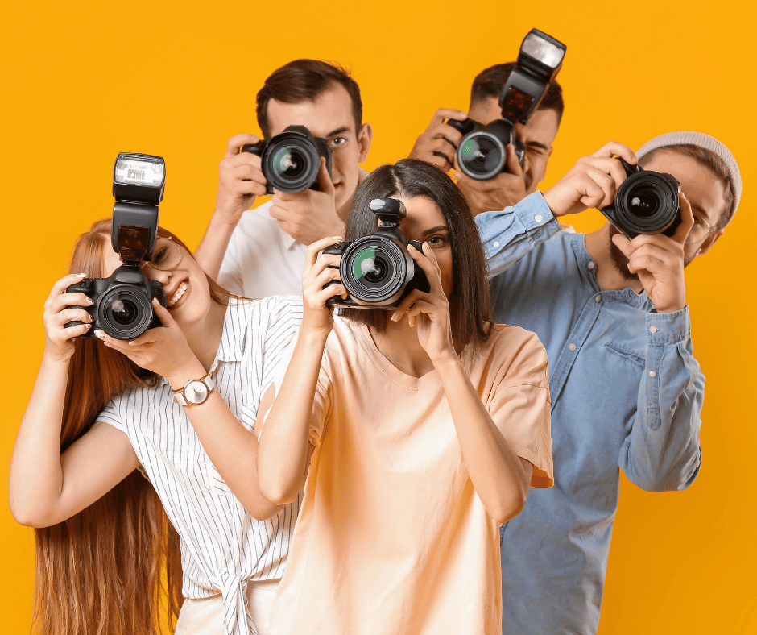

Becoming a Photographer
In the beginning, I truly enjoyed taking spontaneous photos, capturing everyday moments that were random in nature. Images of the sky, food, or people around me were all taken using just my mobile phone. It wasn’t something professionally planned, but rather my way of preserving memories through visuals.
This interest gradually evolved when I pursued a Bachelor’s Degree in Media. It was during this time that I began to view photography not merely as a hobby, but as a meaningful form of visual communication. I started exploring different photography techniques, understanding the nuances of lighting, composition, and storytelling through images.
Today, I continue this passion not only for personal enjoyment but also as part of my academic responsibilities. The assignments in this field often require me to produce conceptual photography, which has helped me understand technique, visual storytelling, and the importance of aesthetics in every shot I take. This journey has not only honed my technical skills but also deepened my appreciation for the art of photography.
 


